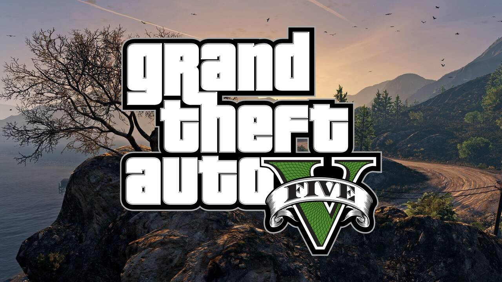

01
¿Qué es GTA V?

Grand Theft Auto V es un videojuego de acción y aventura desarrollado por Rockstar North y publicado por Rockstar Games en septiembre de 2013. Es el decimoquinto título principal de la saga GTA y uno de los juegos más vendidos de la historia, con más de 195 millones de copias distribuidas. Combina una narrativa cinematográfica con un mundo abierto enorme ambientado en la ficticia ciudad de Los Santos, inspirada en Los Ángeles.